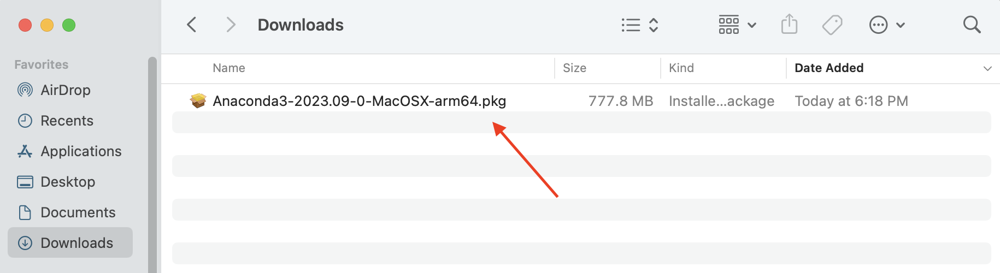
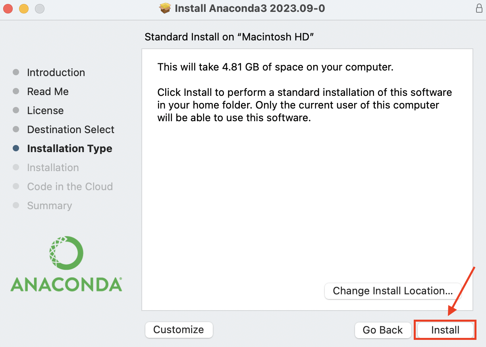
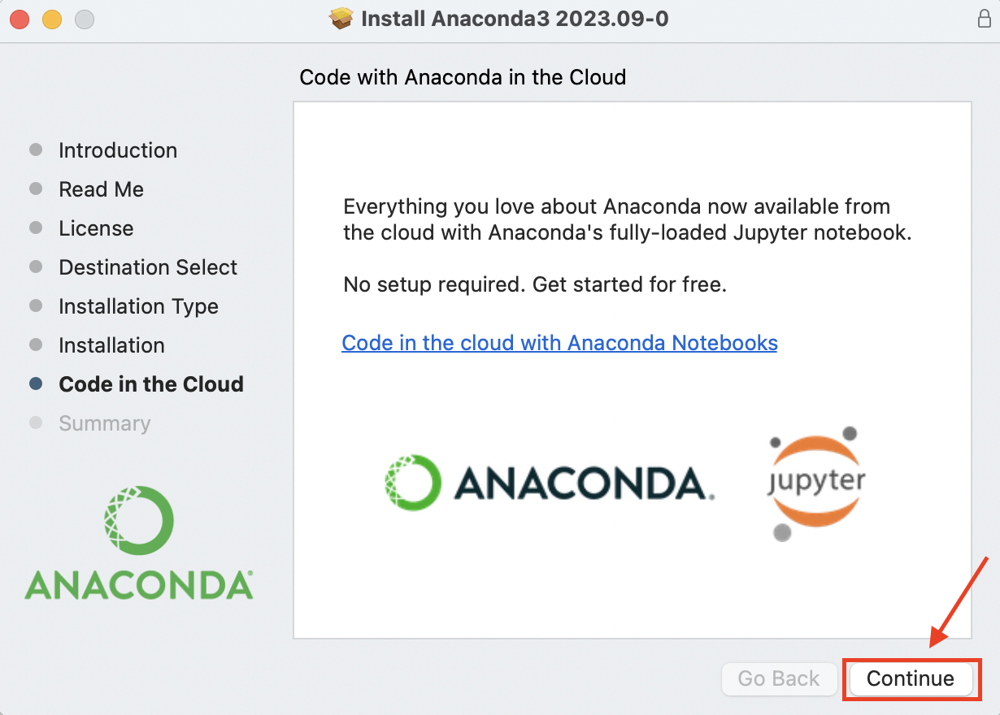

Anaconda Installation Guide for macOS
Anaconda Installation Guide for macOS
Introduction
This guide will walk you through the process of installing Anaconda, a popular Python distribution, on your macOS computer. Anaconda provides a convenient way to manage Python packages and environments for data science and scientific computing.
Prerequisites
Before you begin, ensure you have the following:
- A macOS computer.
- An internet connection.
- Sufficient disk space for the installation.
Installation Steps
1. Download Anaconda
Visit the Anaconda download page at https://www.anaconda.com/download.
2. Choose the macOS Installer
Click on the “Download” button under the macOS section depending on you System-on-chip (Intel/M1/M2) to download the Anaconda installer for macOS.
3. Run the Installer
- Locate the downloaded file (usually in your “Downloads” folder).
- Double-click the Anaconda disk image (
.dmg) file to open it and click on “Allow” when prompted.


4. Follow the Installer Wizard
- Follow the on-screen instructions to begin the installation.
- Read and accept the license agreement when prompted.


5. Install Anaconda
Click the “Install” button to begin the installation process. This may take a few minutes.

6. Complete the Installation
Once the installation is complete, you will see a confirmation message. Click the “Continue” button and finally close the installation wizard by clicking on the “Close” button.


7. Move the Installer file to Trash (Optional)

8. If prompted to update the navigator, select “No, don’t show again”

9. You’re NOT REQUIRED to Log in/Sign up for Anaconda Cloud, close the prompt by clicking the “x” button

10. Verify the Installation
To verify the installation launch a local Jupyter Server by clicking on the “launch” button for Jupyter Notebook.

You should see a terminal open and the Jupyter Notebbok server launched in a browser window.
Conclusion
Congratulations! You’ve successfully installed Anaconda and Jupyter on your macOS computer. You can now use Anaconda to create Python environments, manage packages, and work on data science projects.
For more information on using Anaconda, refer to the official documentation at https://docs.anaconda.com/.
If you encounter any issues or have questions, don’t hesitate to seek help from the Anaconda community or consult the documentation for troubleshooting tips.